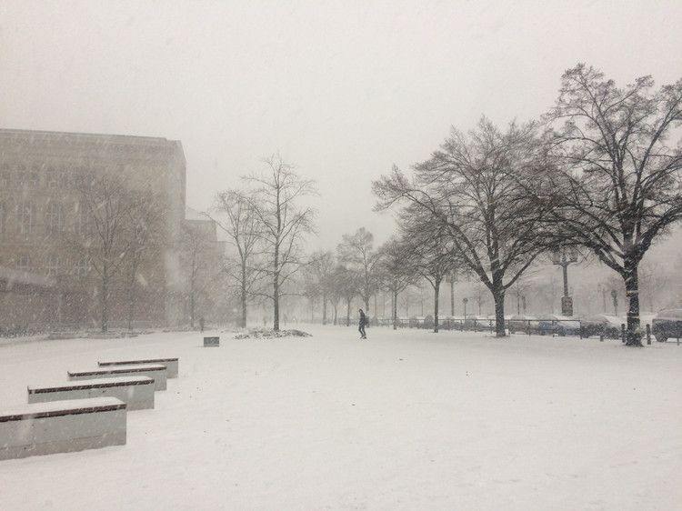
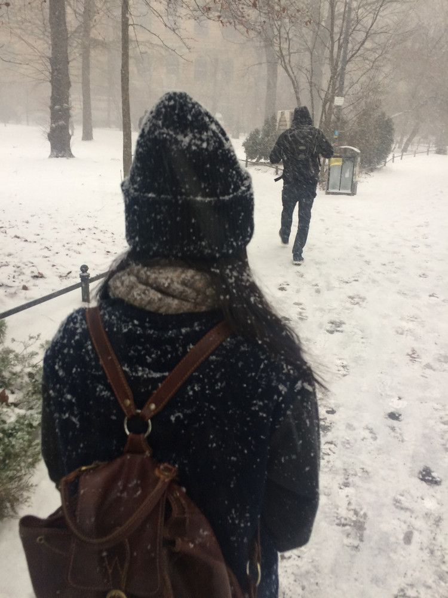
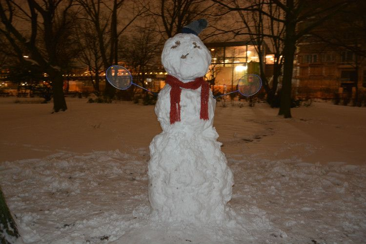
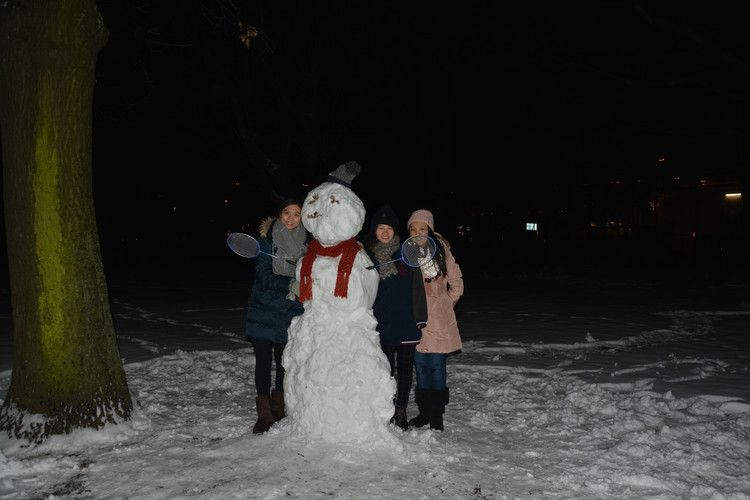

2016-01-10 堆雪人儿
目录
今天早上出门，看天气预报，说下雪概率为0%。朝窗外看了看，雪后晴天，阳光映着白的雪，清爽极了。但我心里不禁感到遗憾，还没有去拍一些下雪时候的照片呢！
等我两点上完课，去食堂吃饭。外面就开始呼呼呼呼的刮大雪。
作为一个南方人，尽管我在大连适应了几年，但我还是很激动啊！因为我在大连也没有见过这么大的雪啊。雪直接像雨滴一样，往脸上铺！

我今天穿的是棉服，特别沾雪。

鉴于今天对于我是个好天气，特别想堆雪人， 就把住的近的两个同学昕昕和蕾蕾叫出来啦。
我带了帽子，围巾，羽毛球拍和相机，就去附近的公园和她们汇合了。
我们仨每人滚了一个雪球，最后堆在一起时傻眼了：这个雪人跟想象的有点不一样啊，怎么这么瘦这么高的的雪人啊/(ㄒoㄒ)/~~ 一点都不萌！！
接着我们仨就想办法啊，开始为雪人平衡比例，把脑袋弄小点弄圆点，把身体弄月半点。
给雪人戴上围巾，安上羽毛球拍手臂后，就只剩脸没完成啦！我们仨都没有胡萝卜，也没有荔枝核，而且超市也关门了，就想，咋办呀咋办呀。
最后机智的昕昕摘了一片叶子，一个眼睫毛很长的眼睛就出来了。哈哈。好有野性美的雪人啊！
这就是我们堆得1米8的瘦子雪人。 你见过这么瘦高的雪人吗？

但我们仨还是很得意的呀！ 就开始拍照。公园里就我们仨，没人帮我们拍合影啊。我就去马路上拦了一个小哥，他很爽快的答应了。（只是我不知道为什么背景没有我拍的好看啊~

堆雪人真的很有意思。
说句题外话，最近看阅读资料，看到“全球变暖”这个主题。我搜了下NPR，SSS的一些这方面的文章，返现大家最近的看法又有不同了。例如美国俄克拉荷马州的参议员James Inbole 认为，冬天非常寒冷，经常出现超低温，而且也下雪，这就说明并没有变暖。很多人都用亲身经历来支持他这个观点。但是研究者说，出现历史高温的次数比出现历史低温的次数多多了。